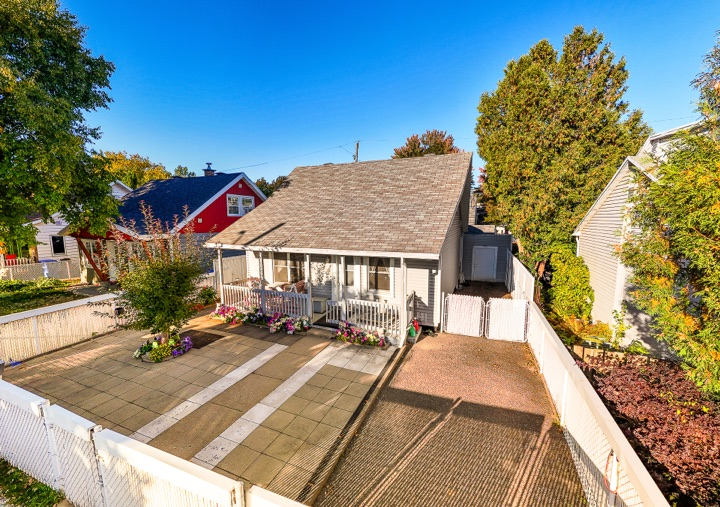
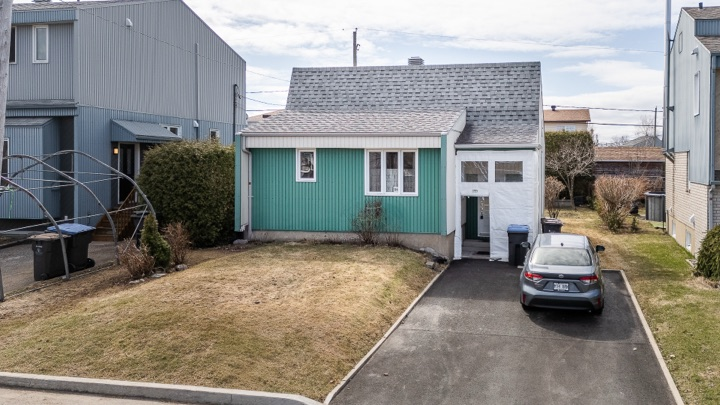
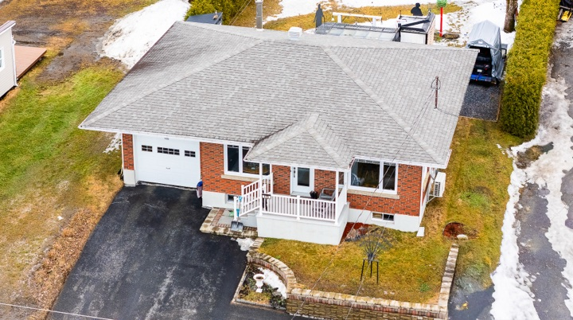
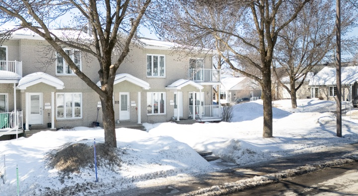
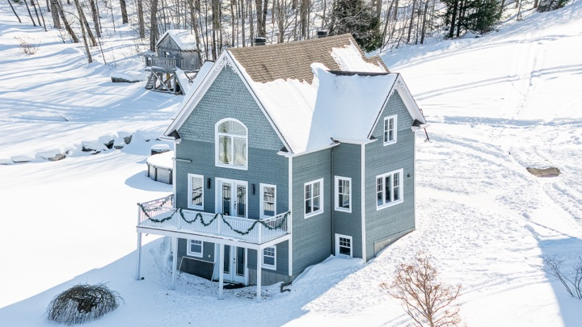
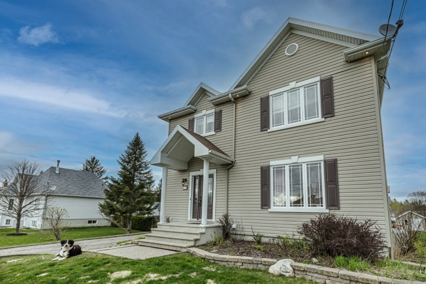
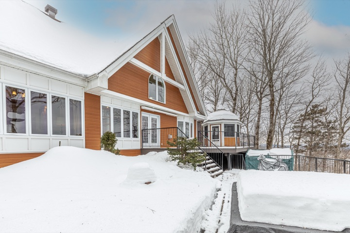

Réalisations
Explorez nos réalisations, regroupées par catégorie.
Via Capitale
Exp Realty
RE/MAX

1055 Caledonie
Val-Bélair

133 rue Marinier
Québec

523 bld jean talon ouest
Québec

106 rue Calvados
Lévis

125 rue principale
Lambton

7657 Des Gradins
Québec

667 De La Colline
Saint-Romain

543 rue St-Joseph
Lévis

17 rue Desrochers
Shannon

7 rue du Plateau
Lac Beauport